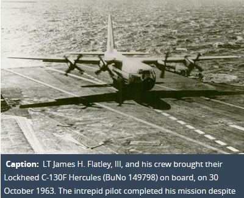
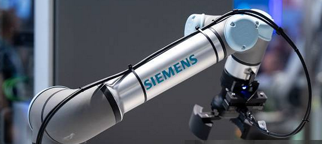
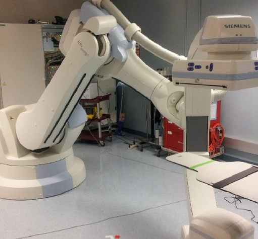
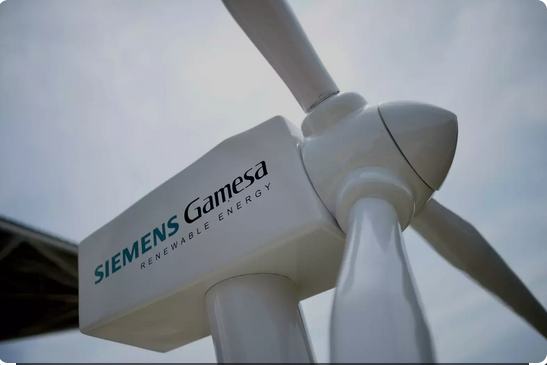
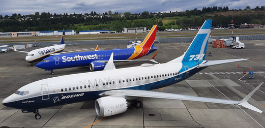

Global Considerations in Engineering Design and Project Delivery#
Course Website
Readings#
Introduction#
Brief overview of globalization in engineering.
Importance of ethical, economic, environmental, and cultural considerations.
Role of engineers in ensuring responsible global project delivery.
Case studies: Lockheed bribery scandal and similar incidents.
Global Engineering Challenges and Opportunities#
Economic and Political Considerations
Differences in economic development and infrastructure needs.
Political stability and legal frameworks affecting engineering projects.
Trade policies, tariffs, and their impact on project costs.
Cultural and Ethical Considerations
Cultural sensitivity in engineering practices.
Ethical dilemmas in foreign project delivery.
Bribery, corruption, and ethical codes of conduct.
Environmental and Sustainability Considerations
Climate adaptation and sustainability in international projects.
Local environmental regulations and global sustainability standards (ISO 14000, LEED, etc.).
Case examples of failures due to ignoring environmental concerns.
The Lockheed Bribery Scandal: When Great Engineering Fails to Sell Itself#
The Lockheed bribery scandal of the 1970s is one of the more consequential corporate corruption cases in recent history, not only exposing deep-rooted ethical failures in international business but also shaping global anti-corruption policies. Lockheed Corporation, one of the premier aerospace manufacturers of its time, engaged in illicit payments to foreign officials in Japan, Italy, the Netherlands, and other nations to secure aircraft sales. This scandal ultimately led to the U.S. Congress passing the Foreign Corrupt Practices Act (FCPA) of 1977, which remains a cornerstone of corporate ethics and international business regulation.
However, a deeper irony exists in the Lockheed case: the company’s engineering was world-class, but it still resorted to bribery to compete. At the time, Lockheed’s L-1011 TriStar was arguably the most advanced commercial airliner in the world, and its military aircraft were state-of-the-art—yet neither were guaranteed market success. This dicotomy raises an important question: If a company builds the best product, why does it still need to bribe its way into sales?
The Bribery Scandal: Business by Any Means Necessary#
During the 1960s and 1970s, Lockheed faced financial difficulties despite producing groundbreaking aerospace technology. The commercial aircraft industry was fiercely competitive, and Lockheed’s attempt to challenge Boeing and McDonnell Douglas with the L-1011 TriStar had pushed the company to the brink of bankruptcy. Likewise, in the military sector, Lockheed was competing with European firms for lucrative international defense contracts.
Lockheed’s Strategy: Bribes to Secure Sales#
In an effort to win foreign government contracts, Lockheed executives funneled millions of dollars in bribes through various intermediaries, consultants, and shell companies. Some of the infamous examples include:
Japan (The “Lockheed Scandal”)
Lockheed paid over $12 million in bribes to Japanese officials, including Prime Minister Kakuei Tanaka, to influence All Nippon Airways (ANA) to purchase the L-1011 TriStar instead of competing Boeing aircraft. The revelation of these payments led to Tanaka’s arrest and imprisonment for corruption, causing a massive political scandal in Japan.
Italy and the Netherlands
Lockheed paid bribes to Italian politicians and members of the Dutch royal family to secure sales of military aircraft. Prince Bernhard of the Netherlands was directly implicated in the scandal, leading to his resignation from public life. Germany and Saudi Arabia
Bribes were also funneled to officials in West Germany and Saudi Arabia to secure defense contracts for Lockheed’s F-104 Starfighter—an aircraft that became notorious for its high accident rate due to poor pilot training and operational mismatches rather than design flaws.
The scandal exploded in 1975 when the U.S. Senate, led by Senator Frank Church, launched investigations into questionable payments by U.S. corporations. Lockheed was compelled to admit that it had spent over $22 million on bribes, revealing a systemic practice of corruption in global arms and aviation deals.
Why Did Lockheed Resort to Bribery If Its Engineering Was the Best?#
Lockheed’s scandal raises a profound issue: the company produced some of the most advanced aircraft of its era, yet it struggled to secure contracts without unethical practices.
The L-1011 TriStar: Ahead of Its Time, But Undersold
The L-1011 was technologically superior to its main competitor, the McDonnell Douglas DC-10.
It featured the first autoland system, advanced engine health monitoring, and a quiet, fuel-efficient Rolls-Royce RB211 engine. Safety and reliability were unparalleled—the L-1011 had zero fatal crashes due to design flaws, compared to the DC-10’s repeated catastrophic failures (e.g., Turkish Airlines Flight 981).
Yet, despite its clear engineering advantages, Lockheed failed to capture market share. The reasons?
Delayed production due to financial troubles at Rolls-Royce.
Boeing and McDonnell Douglas had stronger airline relationships and political leverage.
The aviation industry prioritized cost over advanced technology, and Lockheed couldn’t compete on price alone.
Bribery became a means to compensate for poor market positioning, not poor engineering.
Military Aircraft: Technologically Unmatched but Politically Difficult Lockheed’s military aircraft—like the F-104 Starfighter and the C-130 Hercules—were some of the best aircraft of their time.
This aircraft: could in principle operate from an aircraft carrier (circa 1963)

and can internally carry and deliver this vehicle in a fully operational condition
Over 60 years later no other fixed-wing aircraft can! (tilt-rotor and heavy lift helicopters can transport as sling-loaded cargo).
However:
The F-104 was a high-performance fighter, but it was challenging to fly without advanced avionics (which modern flight computers now mitigate).
Political and military decision-making often trumped technical merit, making bribery an unfortunate “shortcut” to securing deals.
Ironically, Lockheed’s best designs were often too advanced for the market, making bribery a substitute for competitive sales strategies.
Consequences and the Birth of the Foreign Corrupt Practices Act (FCPA)#
Lockheed’s scandal directly led to the U.S. Congress enacting the FCPA in 1977, prohibiting American companies from engaging in bribery to secure foreign contracts.
New Legal Standards:#
U.S. companies were now subject to criminal penalties for bribing foreign officials. Corporate executives could face personal liability for corruption. The FCPA set the global standard for anti-bribery laws, later influencing the OECD Anti-Bribery Convention (1997) and similar laws worldwide.
Corporate Fallout:#
Lockheed was bailed out by the U.S. government to avoid financial collapse. The company merged with Martin Marietta in 1995, forming today’s Lockheed Martin, which enforces strict anti-corruption policies.
Lessons from the Lockheed Scandal: Engineering Alone Doesn’t Sell#
The Lockheed case demonstrates that technical excellence is not always enough to secure market success. Even when an aircraft is superior in design, efficiency, and reliability, external factors—politics, economics, and market relationships—often determine which products succeed.
The Same Truth Exists Today#
Boeing and Airbus dominate commercial aviation, but their aircraft designs have changed little in the last 40 years.
The L-1011, if modernized with new materials and avionics, could still be competitive today—yet it was doomed by Lockheed’s poor business strategy rather than engineering flaws.
Military aircraft have followed a similar pattern, with Lockheed’s F-22 Raptor being the most advanced fighter in history—yet only 195 were built due to political and budgetary decisions. The Airbus A400M which is to replace the C-130 series was first flown in 2009 (46 years after the C-130 carrier experiments)
The Unfortunate Reality of Great Engineering in a Corrupt World#
The Lockheed bribery scandal remains one of the defining moments in corporate ethics, proving that even world-class engineering cannot always sell itself. While Lockheed built some of the most advanced aircraft of its time, the company’s failure to effectively market them without unethical practices led to its downfall.
The key lesson? Brilliant technology is only one part of success—business acumen, transparency, and ethical decision-making are equally critical.
Lockheed’s case serves as a warning: When companies prioritize short-term gains over integrity, they may win contracts but lose their future.
Siemens Bribery Scandal: A Case Study in Corporate Corruption and Reform#
The Siemens bribery scandal of the 2000s stands as one of the most significant corporate corruption cases in modern history. It exposed the widespread use of illicit payments by Siemens, a global engineering and technology powerhouse, to secure contracts across multiple countries. The scandal not only led to legal repercussions and financial penalties but also prompted major internal reforms aimed at rebuilding the company’s reputation and ensuring compliance with anti-corruption regulations.
The Corruption Scheme#
Siemens, a multinational conglomerate based in Germany, engaged in systematic bribery to win lucrative contracts in countries such as Argentina, China, Greece, and Russia, among others. The company funneled approximately $1.4 billion in bribes through a sophisticated network of intermediaries, consultants, and offshore accounts. These illicit payments were disguised as “business consulting fees” and were used to influence government officials and decision-makers.
 
The practice was deeply ingrained within the company, with senior executives either complicit or willfully ignorant of the corruption. In some cases, Siemens employees even maintained “slush funds” to facilitate bribe payments. While the company defended these actions as necessary to remain competitive in certain markets, the scheme was illegal under both German and U.S. anti-corruption laws.

Investigation and Legal Consequences#
The corruption scandal came to light following investigations by regulatory authorities in Germany and the United States. The U.S. Securities and Exchange Commission (SEC) and the Department of Justice (DOJ) collaborated with German authorities to uncover Siemens’ fraudulent activities. In 2008, the company agreed to pay a record-breaking $1.6 billion in fines and settlements—the largest-ever penalty at the time for violations of the U.S. Foreign Corrupt Practices Act (FCPA).
The legal consequences included:
$800 million in U.S. fines: Siemens agreed to pay the U.S. DOJ and SEC for violating the FCPA. €395 million in German fines: Siemens paid penalties to German authorities for corporate mismanagement. Resignations and prosecutions: Several top executives, including former CEO Heinrich von Pierer, resigned or faced legal scrutiny. Reputational Damage and Corporate Reforms The scandal severely damaged Siemens’ global reputation, calling into question the company’s business ethics and corporate governance. Many investors and stakeholders demanded reforms to restore trust and ensure compliance with international anti-corruption standards.
In response, Siemens undertook a massive internal restructuring:
Leadership Overhaul: New CEO Peter Löscher was appointed in 2007 to lead the company through the crisis and implement reforms.
Compliance Reforms: Siemens established one of the most comprehensive corporate compliance programs in the world, hiring a Chief Compliance Officer and implementing stringent anti-corruption policies.
Third-Party Oversight: The company engaged external monitors, including former German finance minister Theo Waigel, to oversee compliance efforts.
Whistleblower Protections: Siemens developed an internal reporting system to encourage employees to report unethical behavior without fear of retaliation.
Cultural Change Initiatives: Siemens launched ethics training programs for employees and management to foster a corporate culture that prioritizes integrity over profits.
Lessons Learned#
The Siemens bribery scandal serves as a stark reminder of the dangers of corporate corruption. It highlights the need for strong regulatory oversight, ethical leadership, and effective compliance programs to prevent corporate misconduct. The scandal also underscores the importance of international cooperation in tackling white-collar crime, as globalized business operations require enforcement agencies to work across borders.
Despite the initial damage, Siemens’ proactive approach to reform has allowed the company to regain public trust and continue its operations as a leading global enterprise. The case remains a landmark example of how corruption can undermine even the most successful corporations—and how transparency, accountability, and reform can pave the way for recovery.
Boeing and the 737 MAX Controversy: Engineering, Ethics, and Regulatory Pressures#
The Boeing 737 MAX controversy is another significant engineering and corporate ethics crises in modern aviation history. The aircraft, introduced as an upgrade to the popular Boeing 737 series, became the focus of intense scrutiny following two fatal crashes—Lion Air Flight 610 in October 2018 and Ethiopian Airlines Flight 302 in March 2019—which together claimed 346 lives. Investigations revealed serious engineering flaws, regulatory lapses, and corporate decisions that prioritized speed-to-market over rigorous safety assessments. The scandal exposed the complex interplay between economic competition, regulatory oversight, and engineering ethics in the aerospace industry.
Circa 1967
Circa 2016

The Competitive and Regulatory Context#
Boeing’s decision to develop the 737 MAX was largely driven by market competition with Airbus. In 2010, Airbus announced the A320neo, an upgraded version of its popular A320 series, offering fuel efficiency improvements with minimal changes to the airframe. Airlines quickly placed large orders, pressuring Boeing to develop a response without losing market share. Instead of designing a new aircraft from the ground up, Boeing opted to modify the existing 737 design to incorporate more fuel-efficient engines. However, the new, larger engines affected the aircraft’s aerodynamics, requiring software modifications to maintain stability.
To meet an accelerated production timeline and regulatory approvals, Boeing implemented the Maneuvering Characteristics Augmentation System (MCAS)—a software feature designed to automatically adjust the aircraft’s pitch under certain conditions. However, MCAS relied on data from a single angle-of-attack sensor, making it vulnerable to failure. Furthermore, Boeing downplayed the system’s significance, omitting detailed documentation in pilot training manuals to minimize retraining costs for airlines.
Regulatory oversight, particularly from the Federal Aviation Administration (FAA), was also compromised. Boeing exerted influence over FAA certification processes, leading to a situation where Boeing engineers were effectively responsible for certifying their own work. This conflict of interest meant that critical design risks were overlooked or underestimated during the aircraft’s approval process.
Ethics of Speed-to-Market vs. Safety#
The Boeing 737 MAX controversy raises profound ethical questions about corporate decision-making in high-stakes industries. The central ethical dilemma revolves around the balance between commercial competitiveness and public safety.
Economic and Legal Fallout#
Boeing suffered losses exceeding \(\$\)20 billion due to production halts, legal settlements, and compensation to airlines. The company agreed to pay a \(\$\)2.5 billion settlement to resolve fraud charges related to misleading regulators. Regulatory and Corporate Reforms
The FAA revised its certification process, increasing scrutiny of manufacturer-led approvals. Boeing implemented internal reforms, including greater transparency in engineering decision-making and improved pilot training requirements.
Rebuilding Public Trust#
Boeing faced significant reputational damage and customer skepticism. The company has since made efforts to rebuild trust by enhancing quality control and emphasizing safety over speed in future aircraft development. Lessons from the 737 MAX Crisis The Boeing 737 MAX controversy serves as a critical case study in engineering ethics, regulatory responsibility, and corporate governance. It highlights the dangers of compromising safety in pursuit of economic efficiency and underscores the need for independent oversight in industries where lives are at stake.
Lessons Learned:#
Ethical engineering must take precedence over financial considerations, especially in industries with direct public safety implications. Regulatory agencies must remain independent and vigilant, ensuring that commercial pressures do not undermine safety standards. Transparency and accountability are essential—corporations must prioritize open communication with regulators, customers, and the public. Ultimately, the Boeing 737 MAX case is a stark reminder of the consequences that arise when corporate ambition overrides engineering integrity. It reinforces the importance of ethical decision-making in the face of commercial pressures and the long-term cost of neglecting safety for the sake of speed.
The Volkswagen Emissions Scandal: When Deception Overrules Engineering Excellence#
Few companies in the automotive world were as respected as Volkswagen (VW) before the 2015 emissions scandal—often called “Dieselgate”—shattered its reputation. The company, known for its precision engineering, fuel-efficient diesel engines, and reliability, admitted to installing software that falsified emissions test results in over 11 million vehicles worldwide. This deliberate deception allowed VW cars to pass environmental tests while emitting up to 40 times the legal limit of nitrogen oxides (NOx) under real-world driving conditions.
Much like the Lockheed bribery scandal or Boeing’s 737 MAX debacle, Volkswagen’s scandal serves as a cautionary tale of how cutting corners for short-term financial gains can undermine even the most successful companies. The irony? Volkswagen engineers were capable of delivering the promised performance without cheating—but the business climate prioritized speed and cost over long-term sustainability.
The Deception: How VW Cheated Emissions Tests#
During the 2000s and early 2010s, Volkswagen heavily marketed “clean diesel” technology, promoting diesel engines as a fuel-efficient, low-emissions alternative to gasoline and hybrid cars. The TDI (Turbocharged Direct Injection) diesel engines in models like the Jetta, Passat, and Golf were advertised as environmentally friendly while maintaining high performance.
However, VW’s engineering team faced a serious challenge:
Stringent U.S. and EU emissions standards required ultra-low NOx emissions. Customers still demanded power, fuel efficiency, and cost-effectiveness. Competitors like Toyota were excelling with hybrid technology, making VW’s diesel push seem less viable. Rather than investing in costly engine modifications or better emissions-reduction technology, VW executives chose to fake it:
The “Defeat Device” – VW installed software in its engine control unit (ECU) that detected when a car was undergoing an emissions test. How It Worked – During lab tests, the software adjusted fuel injection, exhaust treatment, and engine performance to emit legally compliant levels of NOx. Real-World Driving – Once out of testing mode, the software deactivated emissions controls, allowing the car to produce higher horsepower, better fuel economy, and excessive pollutants. This deception continued undetected for years, benefiting VW’s marketing and sales while giving it an unfair advantage over competitors.
The Fallout: Financial, Legal, and Reputational Damage#
Volkswagen’s scheme unraveled in 2015 when researchers from West Virginia University discovered the discrepancies between emissions tests and real-world driving data. Once the U.S. Environmental Protection Agency (EPA) launched an investigation, VW’s global fraud came to light.
Consequences of Dieselgate Legal and Financial Penalties
$30+ billion in fines, lawsuits, and compensation to customers. VW was forced to buy back or fix hundreds of thousands of diesel cars. Criminal charges against several top VW executives. Severe Reputational Damage
Trust in Volkswagen collapsed, especially among environmentally conscious consumers. VW lost its image as a “people’s car” brand that stood for reliability and ethics. Sales plummeted, especially in the U.S., where diesel was already a niche market. A Weakened Industry Position
VW fell behind competitors in the race toward electrification. The scandal accelerated the decline of diesel engines, pushing automakers toward hybrid and electric alternatives. Today, VW struggles to reclaim lost market share and faces massive restructuring costs to pivot toward electric vehicles.
The Bigger Issue: Even the Best Engineering Can’t Sell Itself Without Trust#
Much like Lockheed’s L-1011 TriStar or Boeing’s 737 MAX, VW’s emissions scandal underscores a critical truth:
Warning
A company can have world-class engineering, but if its business practices are unethical, long-term success is unsustainable.
The Reality of Volkswagen’s Engineering: Cheating Wasn’t Necessary#
What makes this case particularly tragic is that Volkswagen engineers were fully capable of developing compliant diesel engines without deception. In fact:
Other automakers (like Mercedes-Benz and BMW) met emissions standards through legitimate engineering solutions, though at a higher cost. Volkswagen itself had the technical ability to do the same but chose a short-term financial shortcut instead. The emissions scandal wasn’t a failure of engineering—it was a failure of leadership and ethics.
Why Volkswagen Struggles Today#
Even though the modern economy is challenging for legacy automakers, Volkswagen’s self-inflicted wounds from Dieselgate continue to haunt it.
The EV Transition is Expensive and Unforgiving Volkswagen has invested billions into electric vehicles (EVs) to recover its reputation. However, EV market leader Tesla and Chinese automakers now dominate, making VW’s pivot difficult. Dieselgate drained resources that could have been used to develop early EV leadership.
Consumer Trust is Hard to Rebuild Many former VW loyalists turned to Tesla, Toyota, and Hyundai—brands with cleaner reputations. Dieselgate taught consumers to be skeptical of corporate sustainability claims.
Volkswagen’s “People’s Car” Identity is Fading VW built its empire on affordable, well-engineered cars for the masses (e.g., the Beetle and Golf). Now, the company struggles to define its identity, caught between high-end German brands (Mercedes, BMW) and aggressive new competitors. The Takeaway: Engineering Excellence Alone Isn’t Enough The Volkswagen emissions scandal is another case study in how even the best engineering doesn’t guarantee success if ethical and strategic business decisions fail.
Volkswagen engineers had the talent to make compliant engines, but corporate leadership prioritized deception over innovation.
In the modern economy, reputational damage from ethical lapses can cripple even the strongest corporations.
Great products alone won’t sell if consumers, regulators, and partners don’t trust the company behind them.
Much like Lockheed, Boeing, and Siemens, Volkswagen serves as a powerful reminder to engineers and business leaders:
Excellence in design must be matched by integrity in execution. Otherwise, even the most advanced products may become liabilities rather than triumphs.
Bribery as a Global Issue#
Warning
This section is controversial - the intent is to illustrate a completely non-technical aspect of the business of engineering that affects our global competitiveness and the health and safety of society. I do not offer any solutions, and the references are at present somewhat amateurish. With that forewarning we shall proceede.
Corruption exists in both developed and developing countries, but the scale and form differ. While many Western nations have strict anti-bribery laws (e.g., the U.S. Foreign Corrupt Practices Act (FCPA) and the UK Bribery Act), bribery remains a persistent challenge in several regions where informal payments and patronage networks influence business transactions.
Cultures Where Bribery Is More Commonplace
Certain countries and regions experience high levels of business-related corruption due to systemic governance issues, bureaucratic inefficiencies, or deeply ingrained traditions of favoritism and patronage. Below are some key examples:
Sub-Saharan Africa
Many African nations struggle with corruption at both government and corporate levels. Business operations often require informal payments to secure licenses, contracts, or regulatory approvals.
Transparency International’s Corruption Perceptions Index (CPI) frequently ranks countries such as South Sudan, Somalia, and the Democratic Republic of the Congo among the most corrupt.
Reference: Transparency International – Corruption Perceptions Index
South and Southeast Asia
In some countries, bribery is seen as a “facilitation payment” rather than an illegal act. For instance, in India and Indonesia, businesses often rely on informal payments to expedite government services.
In 2018, Malaysia’s 1MDB scandal implicated government officials and banks in a multi-billion-dollar corruption case.
Reference(s):
Eastern Europe and Russia
Corruption in Russia and parts of Eastern Europe often takes the form of oligarchic control over state assets, with bribery playing a key role in securing government contracts and protection.
The Magnitsky Case, in which lawyer Sergei Magnitsky uncovered massive tax fraud involving Russian officials, illustrates how deeply embedded corruption is in state functions. Reference(s):
Latin America
Bribery scandals have plagued major companies and politicians in Brazil, Mexico, and Venezuela.
The Odebrecht Scandal exposed systematic bribery across Latin America, where the Brazilian construction giant paid millions to secure contracts.
Reference(s):
Operation Car Wash: Is this the biggest corruption scandal in history?
Odebrecht scandal: Ecuador vice-president given six years’ jail
Middle East and North Africa (MENA)
In many MENA nations, business dealings often rely on wasta (connections), where favors and bribes are expected to facilitate transactions.
Countries like Saudi Arabia and Egypt have taken steps to curb corruption, but bribery still plays a role in procurement and business licensing.
Reference(s): World Bank – MENA Governance and Corruption
Are There Cultures Where Bribery Is Minimal?
Yes, certain countries have low levels of corruption due to strong institutions, transparency, and cultural norms that discourage unethical business practices.
Scandinavian Countries (Denmark, Sweden, Finland, Norway)
These nations consistently rank among the least corrupt due to their high levels of government transparency, independent judiciary systems, and strong media oversight.
Reference: Transparency International – Least Corrupt Countries
New Zealand
Known for strict anti-bribery laws and an independent public sector, New Zealand has a strong record of ethical business practices. Reference: OECD – New Zealand Anti-Corruption Policies Singapore
Singapore has a zero-tolerance approach to corruption, with harsh penalties for bribery and a highly efficient regulatory framework.
Reference(s): Singapore Corrupt Practices Investigation Bureau (CPIB) – Anti-Corruption Framework
Bribery is a deeply entrenched issue in many countries, particularly where regulatory frameworks are weak or where cultural norms accept informal payments as part of doing business. While global anti-corruption initiatives have improved transparency in some areas, corruption remains a persistent challenge. However, countries like Denmark, New Zealand, and Singapore demonstrate that strong institutions, legal enforcement, and cultural integrity can minimize bribery and promote ethical business practices.
Reconciling Cultural Differences in Engineering: The U.S. Engineer’s Dilemma#
U.S. engineers working in international markets often face a fundamental cultural dichotomy between strict anti-bribery regulations and the reality that bribery or facilitation payments are considered “normal business practice” in certain countries. This tension presents ethical, legal, and practical challenges. Successfully navigating this landscape requires a combination of ethical reasoning, corporate compliance frameworks, and diplomatic business strategies.
The Ethical and Legal Framework for U.S. Engineers U.S. engineers are bound by multiple professional and legal obligations that explicitly prohibit bribery, regardless of the cultural expectations of the country in which they operate.
Key Regulations and Ethical Standards:
U.S. Foreign Corrupt Practices Act (FCPA)
Enacted in 1977, the FCPA prohibits U.S. companies and individuals from offering or paying bribes to foreign officials to secure business advantages.
Facilitating payments (small bribes to speed up routine government actions) are technically allowed under FCPA but heavily discouraged by corporate compliance programs. The issue is likely to be who decides if the expedite fee is reasonable (the US has such fees) or goes into a bearded terrorist’s pocket
Penalties: Heavy fines, corporate sanctions, and potential criminal prosecution.
Note
The White House issued an executive order :Pausing Foreign Corrupt Practices Act Enforcement to Further American Economic and National Security
Many law firms have opined on the pause, a representative example being FCPA Freeze and Refocus: Is Enforcement Becoming a Tool to Promote U.S. Economic, Foreign Policy and National Security Interests?
Whether the pause will stand beyond the initial 180 days is anyone’s guess. But it reflects the very fluid nature of international business practices.
National Society of Professional Engineers (NSPE) Code of Ethics
Engineers must act with honesty, integrity, and fairness and avoid conflicts of interest. “Engineers shall not offer, give, solicit, or receive any contribution to influence award of a contract by public authority.” NSPE enforces disciplinary actions against members who violate ethical codes. Corporate Anti-Bribery Compliance Programs
Large multinational engineering firms (e.g., Bechtel, Fluor, Jacobs) have strict anti-bribery compliance training and internal monitoring to prevent violations.
A general myth is that whistleblower protections allow employees to report bribery pressures anonymously. If bribery can be proved, it is a crime (at least in the USA) but consider the note below.
Note
Paraphrasing the U.S. Dept. of Labor Generally, anonymous complainants are not entitled to whistleblower retaliation protection; whereas, “confidential” complainants, and complainants who allow their identities to be disclosed, are afforded protections against whistleblower retaliation.
In short, U.S. engineers are legally and ethically required to reject bribery, even in cultures where it is the norm. The challenge is finding alternative ways to conduct business without violating ethical and legal obligations.
Practical Strategies for U.S. Engineers Working in High-Corruption Regions
A. Rely on Strong Contractual and Compliance Mechanisms Engineering firms working internationally often use “integrity clauses” in contracts that explicitly prohibit bribery. Many companies conduct due diligence on business partners to ensure they are not engaging in corrupt practices. Third-party audits and compliance officers are used to ensure financial transparency.
B. Shift Negotiations to Transparency-Driven Mechanisms Use public tenders and competitive bidding: Ensuring transparency in contract bidding can reduce the need for under-the-table dealings. Lobby for clear regulations: Engineers working with government agencies can advocate for transparent procurement rules.
C. Work with Multinational Organizations and NGOs World Bank and International Monetary Fund (IMF) projects often require adherence to strict anti-corruption policies. Partnering with Transparency International and other watchdog organizations can strengthen legitimacy in high-risk regions.
D. Cultural Sensitivity and Ethical Diplomacy Emphasize Long-Term Value Over Short-Term Gains Some foreign officials may expect bribes simply because it’s “how things are done.” Instead of direct refusal, engineers can emphasize that transparency, quality, and long-term relationships are more beneficial than short-term payments. Use Local Compliance Experts Hiring local legal counsel or compliance officers can help navigate cultural expectations while staying within legal boundaries.
E. Leverage Corporate and Government Support U.S. Embassy and Commerce Department Assistance The U.S. Department of Commerce provides anti-corruption resources for American firms operating abroad. Engineering firms can request diplomatic intervention if facing corruption-related pressures. Industry Coalitions Against Corruption Organizations like the Engineering & Construction Risk Institute (ECRI) provide training and support for engineers dealing with bribery challenges.
Ethical Decision-Making Framework for U.S. Engineers Abroad When faced with potential bribery dilemmas, engineers can use a structured ethical decision-making approach to navigate these situations.
A. Apply the “Front Page Test” Would you be comfortable if your decision appeared on the front page of a major newspaper? If not, reconsider the action.
B. Follow the “Three-Way Test” Legal Test – Is the action legal under U.S. law (FCPA) and local law? Professional Test – Does it align with professional engineering codes of conduct? Moral Test – Is it ethically defensible?
C. Seek Internal Guidance Consult with corporate compliance officers before engaging in any questionable transactions. If pressure to pay a bribe becomes overwhelming, escalate the issue within the company or report to U.S. authorities.
Case Study: Ethical Engineering in a High-Corruption Environment Scenario A U.S. engineering firm is bidding on a large water infrastructure project in a country where bribes are commonly expected to secure government contracts. The local official hints that an “informal fee” will expedite approval.
Ethical Response Firmly decline the bribe and emphasize that U.S. law prohibits such payments. Offer an alternative solution, such as ensuring that the contract bidding process follows an open and competitive procedure. If pressure continues, engage the U.S. Embassy or an international regulatory body for guidance. If the risk of corruption remains high, walk away from the contract rather than compromise ethical standards.
The Engineer as an Ethical Ambassador U.S. engineers working internationally must balance cultural sensitivity with unwavering ethical standards. While some regions operate under different norms, corruption is not an unavoidable reality—it can be mitigated through transparency, strong institutional frameworks, and ethical leadership.
By adhering to U.S. laws, corporate compliance programs, and engineering codes of ethics, engineers can navigate these challenges while maintaining integrity. In the long run, ethical business practices enhance trust, improve project outcomes, and contribute to sustainable economic development—proving that honesty is not just the right thing to do, but also the smart thing to do.
Note
Need to weave trust models into the discussion - it fits in about here
Future Global Challenges for Engineers: Beyond Corruption and Bribery#
Engineering is no longer just about solving technical problems—it is about navigating ethical, societal, and economic dilemmas. The following global issues will challenge engineers in the coming years, requiring both technical expertise and ethical responsibility.
1. Ethical Labor Practices and Workforce Displacement#
A. Automation, AI, and Job Displacement#
AI, robotics, and automation may eliminate millions of jobs, especially in manufacturing and logistics.
Ethical Dilemma: How do engineers balance efficiency and innovation with responsibility to human workers?
Example: Tesla and Foxconn have automated factories, reducing human labor needs.
B. Fair Labor Practices in Global Supply Chains#
Many companies rely on cheap labor in developing countries, often under exploitative conditions.
Example: Apple and Samsung have faced scrutiny for labor practices at Foxconn (China) and cobalt mining operations in the Democratic Republic of Congo.
C. Outsourcing vs. National Interests#
Engineering firms often outsource work to lower-cost countries, raising concerns about national economic security and fair wages.
2. Intellectual Property (IP) Challenges in a Globalized World#
A. Engineering and Technology Theft#
Countries with weaker IP laws may reverse-engineer and mass-produce patented technologies.
Example: China has been accused of stealing aerospace and semiconductor technology from Western firms.
B. Open-Source vs. Proprietary Engineering#
Should engineering knowledge be open-source for the benefit of humanity, or should companies protect their IP for profit and control?
Example: Tesla made some patents public to encourage EV development, while competitors still maintain proprietary control over key battery technology.
C. AI and Patent Law#
AI is now designing new technologies—who owns the intellectual property of AI-generated designs?
3. Sustainability and Environmental Responsibility#
A. The Engineering Ethics of Climate Change#
Engineering practices contribute to climate change, yet engineers must also design sustainable solutions.
Example: Civil engineers designing green infrastructure must persuade clients to invest in higher initial costs for long-term benefits.
B. The Ethics of Geoengineering#
Some scientists propose large-scale interventions (e.g., aerosol injections to cool the planet), but unintended consequences could be catastrophic.
C. Resource Scarcity and Material Ethics#
Lithium, rare earth elements (REEs), and other critical materials for renewable energy and electronics are finite and environmentally destructive to mine.
Example: The demand for EV batteries has increased lithium mining in South America, leading to environmental degradation.
4. Cybersecurity and Engineering Ethics in the Digital Age#
A. The Role of Engineers in Cybersecurity#
Engineers must design systems that protect against cyberattacks.
Example: The Colonial Pipeline cyberattack disrupted the U.S. fuel supply.
B. The Ethics of Digital Surveillance#
Governments and corporations use AI-powered facial recognition and biometric tracking.
Example: China’s AI surveillance industry (e.g., Hikvision) raises global concerns over human rights abuses.
C. Quantum Computing and Cryptographic Disruption#
Quantum computing may break current encryption methods, leading to national security threats.
5. Engineering and Human Rights in Conflict Zones#
A. Autonomous Weapons and AI in Warfare#
Should machines decide life and death without human intervention?
Example: The U.S., China, and Russia are developing autonomous military drones and AI-powered combat systems.
B. The Engineering Ethics of Border Control and Immigration#
Engineers are designing border security infrastructure, including drone surveillance and AI-based monitoring.
6. Engineering Responsibility in Space Exploration#
A. The Ethics of Space Colonization#
Should private companies (e.g., SpaceX) control space colonies instead of nations?
Who owns Mars?
B. Space Debris and Orbital Engineering#
Engineers must address space junk from satellites, which threatens future space missions.
7. The Bioengineering and Genetic Manipulation Dilemma#
A. The Role of Engineers in Human Enhancement#
CRISPR gene editing and bionic enhancements could lead to a genetic arms race.
B. The Ethics of Artificial Organs and Prosthetics#
Who gets access to synthetic organs, brain-machine interfaces, and bionic limbs?
Will these technologies only be available to the wealthy?
The Engineer’s Role in an Uncertain Future#
Future engineers must balance innovation with ethical responsibility.
Engineering decisions will have profound global consequences—both good and bad.
Understanding business, law, and social justice will be just as important as mastering technical skills.
Closing Thoughts#
As you prepare to enter the field of engineering, business, or product development, ask yourself:
Would you rather design an honest but slightly imperfect product—or create a perfect product that relies on deception to succeed?
Will my work improve humanity, or will it create new inequalities?
Am I designing technology for progress or for profit at any cost?
Do I understand the ethical implications of my work?
The world needs engineers who innovate ethically, not just effectively. The next Volkswagen, Lockheed, or Boeing scandal can be prevented by actors who refuse to compromise integrity for short-term gains. Make sure you’re one of them. The next engineering challenges will not just be about building better machines — but building a better world.
End of Section#
Exercise(s) (Optional)#
Prepare an essay describing the history and implications of:
Bangladesh Rana Plaza Collapse (2013): Structural failures in garment industry buildings.
Chinese High-Speed Rail Issues: Corruption and safety concerns leading to fatal accidents.